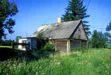
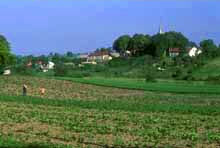
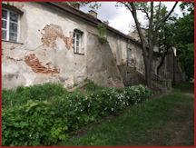
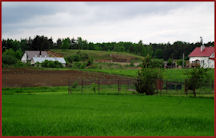

The following are pictures from the Plock Parish. Click on the thumbnail view for an enlarged view of the picture.
| Former Lutheran Church in Plock (currently in use as a Catholic church). - photo courtesy Miles Ertman |
View of the city of Plock from the south bank of the Wisla River. The former Lutheran Church is the building with the spire on the right side. - photo courtesy Miles Ertmann |
||
|  | Former German home in Nowe Bereszewo near Plock. - photo courtesy Miles Ertmann |
 | Biala near Plock, a former German village. - photo courtesy Miles Ertmann |
|  | Back side of the former Lutheran Church near the Wisla River. - photo courtesy of Jerry Frank |
 | Village of Maszewo, a short distance west of the city of Plock. - photo courtesy of Jerry Frank |
| Former German home in Nowe Bereszewo near Plock. - photo courtesy Miles Ertmann |
||||
| Biala near Plock, a former German village. - photo courtesy Miles Ertmann |
||||
{kind=link}
{kind=link}
{kind=link}
{kind=link}
{kind=link}
{kind=link}